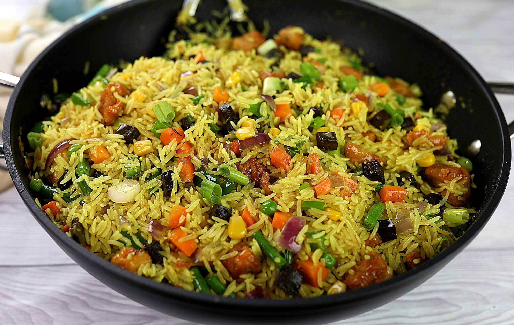

The popular jollof rice is a classic recipe that makes it to almost all special occasions in Nigeria. It is a rich, tasty, and elegant meal consisting of rice cooked with pepper, broth, seasoning, and spices in one pot. Serve this amazing meal with any protein of your choice.

This version of fried rice consists of fresh vegetables fried and stirred into the rice. It is a healthy bowl that consists of beef liver, carrots, green beans, sweet corn peas, and more. You can add any protein of choice, like shrimp, chicken, or beef. Simple but insanely delicious.
A mix of flour, butter, salt, sugar, baking powder, and egg batter kneaded and filled with seasoned ground beef, carrots and potatoes make a comfort snack for you. Whether you are eating it as brunch, breakfast, or snack, you will enjoy this light and flaky delicacy.